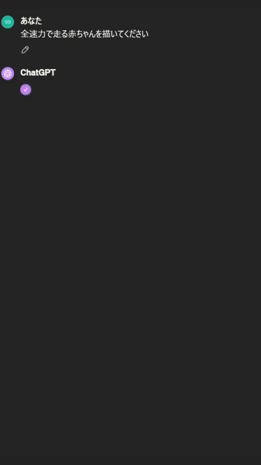

Chat GPT
あなたの毎日をもっと便利に。
こんな悩みありませんか？
上司や取引先にメールを書くのに時間がかかって他のタスクに手が回らない
初めての海外旅行でレストランでの注文方法が分からない
副業でWebサイト制作を始めたいけど何から手を付けたらいいのか分からない
効率的なメールの自動作成、言語の壁を越えたコミュニケーション、Web制作のための勉強法まで、ChatGPTを使えば手軽に解決することが出来ます。
Chat GPTでできること
Chat GPTを体験
Chat GPTを体験してみましょう。聞きたい質問文をクリックしてください。
GPT4にはこんな機能も

毎日をもっと便利に。
ChatGPTは、最先端のAIが提供するパーソナライズされた対話体験で、学習、趣味、ビジネス、日常生活のあらゆるシーンであなたをサポートします。 あなたの毎日をもっと豊かに、もっと便利に変えてみませんか？
Chat GPTを使ってみる→